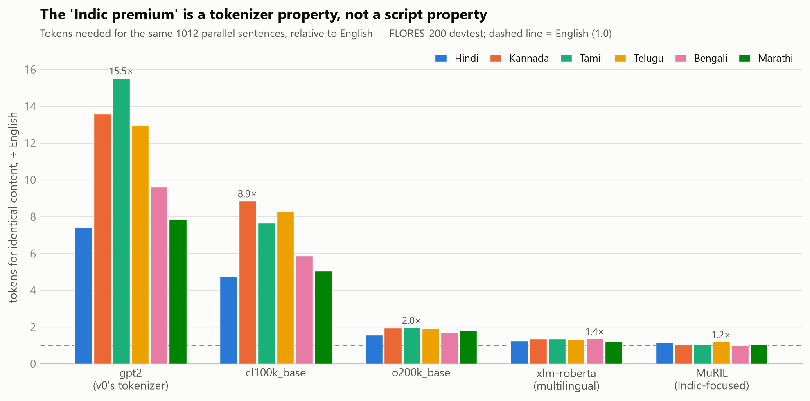

Audit of an intern's tokenizer-fertility & serving-capacity report (REPORT_v0) before leadership routing/capacity decisions · repo: github.com/Manureddy148/AI_Task2 · 2026-08-31
REPORT_v0 makes two families of claims: §1 "Hindi costs ~6× English per token-word; the two metrics confirm each other; it's a property of the script — route Indic traffic and budget 6×", and §2 "longer prompts give better throughput; plan ~1600 tok/s per L4, linear to ~3200 at batch 48". Every claim rests on four shipped artifacts (fertility.py, corpus_sample/, bench/model_spec.md, bench/bench_log.csv), so every claim is checkable — and gets checked. The audit's product is REPORT_v1 (the corrected report leadership can actually use) sitting on a fully machine-verified evidence chain.
| Rule | Mechanism |
|---|---|
| Pin the baseline first | REPORT_v0's numbers reproduced byte-exact from the shipped script + corpora before any claim; all deltas are then attributable. |
| One variable at a time | Each suspected bug is a single toggle against the as-shipped baseline (experiments.py); no flaw claimed without a measured Δ or a demonstrated conceptual failure on data. |
| Cleared items are deliverables | Suspicious-but-fine items (random.seed, NFC) are cleared by experiment — hash-identical output, 0.00% deltas — not flagged. |
| Scripts over prose | Every table is emitted by a version-controlled script; live-defense "change this input" is served by CLI flags (--corpus LANG=PATH, --hin, --log, STARTER_KIT env). |
| Numbers under test | verify.py re-derives and asserts every published figure — 50 checks — run locally and in CI on every push. A prose number with no assertion is treated as unpublished. |
Core correction. A cross-language cost metric needs a denominator that holds content constant. Words, graphemes, code points and bytes all fail in different directions (per-word errs −15% for Hindi and +36% for Kannada on the same data); only tokens-per-parallel-sentence is the quantity cost scales with. The "property of the script" root-cause is falsified by a 6.4× premium spread with script and content held constant:

The reconciliation doubles as instrument calibration: it also settles that the stack's "24 GB" is decimal (a GiB reading predicts util 0.82 / 3 preemptions at the knee — rejected by the logged 0.93 / 7), and surfaces a spec inconsistency v0 never noticed (vocab = 128k, which is not gpt2 — REPORT_v1 §4 brackets the production premium and makes measuring the real tokenizer a recommendation).
After two human rejections, the submission was audited the way it audits the intern — a deterministic multi-agent workflow:
59 agents, ~3.3M tokens, 784 tool calls. The findings and their fixes are themselves documented evidence (docs/INCIDENTS.pdf, NOTEBOOK round 3).
submission/
REPORT_v1.md the product: corrected report for the leadership deck (figures/)
verify.py numbers-under-test harness — 50 assertions; defense entry point
_paths.py starter-kit resolver (env var / both zip nestings, fail-fast)
NOTEBOOK.md · AI_USAGE.md · requirements.txt
partA/ audit/ (repro, one-toggle experiments, findings, romanization) corpus/ (builder, card, 7 hash-pinned files)
fertility_v1.py (5 tokenizers × 4 denominators, CIs, unk%) results/ memo.md
partB/ kv_math.py · reconcile.py (13-row replay + roofline) · capacity.md
partC/ memo.md casual-tone decision memo (tie-proof gates, kill criteria)
docs/ ARCHITECTURE.pdf · INSTRUCTIONS.pdf · INCIDENTS.pdf (+ HTML sources, regeneration script)
.github/workflows/verify.yml · ARCHITECTURE.md · README.md · starter_kit/ (audited inputs)